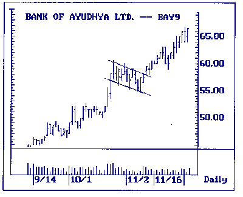
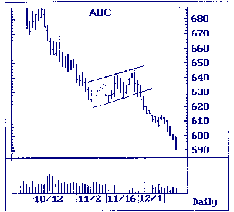
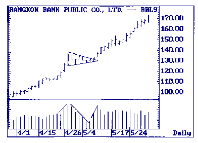
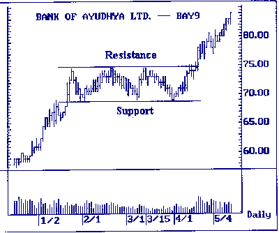
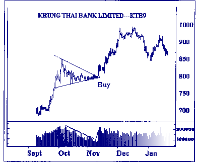
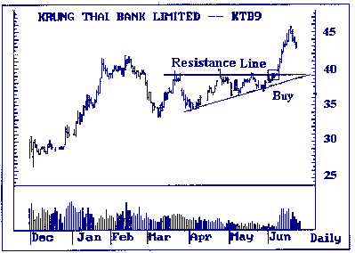
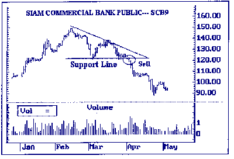

| << | 4 | >> |
รูปแบบของราคาที่บอกถึงทิศทางต่อเนื่อง(CONTINUATION
TREND)
เป็นการเปลี่ยนแปลงของแนวโน้มไปในทิศทางเดียวกันกับแนวโน้มที่เกิดขึ้นมากอ่นหน้านี้
มี 2 รูปแบบ คือ FLAG และ PENNANT
รูปแบบธง (FLAG)
แบ่งเป็น 2 แบบ คือ BULLISH FLAG และ BEARISH FLAG
รูปแบบธงของแนวโน้มขึ้น (BULLISH FLAG)
เกิดขึ้นเมื่อราคาวิ่งขึ้นมาในลักษณะที่ชันมากแล้วปรับตัวเคลื่อนไหวในช่วงแคบ โดยที่การขึ้นครั้งที่
2 จะต่ำกว่ายอดแรก และฐานที่ 2 จะต่ำกว่าฐานแรก โดยในช่วงนี้ปริมาณการซื้อขายจะลดต่ำลงด้วย
และเมื่อใดการขึ้นสามารถทะลุผ่านจุดสูงในยอดเก่าได้ พร้อมกับปริมาณการซื้อขายที่สูงเด่นขึ้น
จะบอกแนวโน้มว่าหุ้นจะขึ้นต่อ
 |
 |
 |
มี 2 ลักษณะคือ RECTANGLE หรือ TRIANGLE
รูปสี่เหลี่ยมผืนผ้า (RECTANGLE)
เกิดจากการเคลื่อนไหวของราคาไปทางด้านข้าง (SIDEWAYS) ทำให้เกิดเส้นหนุน (SUPPORT
LINE) และเส้นต้าน (RESISTANCE LINE) ในลักษณะเส้นขนานในแนวนอน ปริมาณการซื้อขายหุ้นจะลดลงตามลำดับ
และในช่วงต่อมาราคาสามารถทะลุผ่านเส้นขนานทางด้านบนหรือด้านล่างด้วยปริมาณการซื้อขายที่สูงขึ้น
โดยส่วนมากจะเป็นไปตามแนวโน้มที่ดำเนินมาก่อนหน้านี้
 |
SYMMETRICAL TRIANGLE
เกิดจากราคาหุ้นเคลื่อนไหวแบบ SIDEWAYS แล้วแคบลง เมื่อลากเส้นเชื่อมจุดยอดอย่างน้อย
2 จุด และเชื่อมจุดฐานอย่างน้อย 2 จุด จะมาพบกันเป็นมุมแหลม จากนั้นโดยส่วนใหญ่ราคาจะทะลุผ่านขึ้น
หรือลงจากยอดปลายแหลมตามแนวโน้มที่มาก่อนหน้านี้ โดยที่ปริมาณการซื้อขายหุ้นจะลดลงขณะที่มีการก่อตัวเป็นรูปสามเหลี่ยม
และจะมากขึ้นเมื่อทะลุผ่านเส้นปลายแหลมไปได้
 |
THE RIGHT-ANGLE TRIANGLE
เป็นรูปแบบที่น่าเชื่อถือกว่า SYMMETRICAL TRIANGLE มีสองรูปแบบ
คือ
ASCENDING TRIANGLE
เป็นรูปสามเหลี่ยมที่สร้างจากเส้นที่ลากต่อกันระหว่างจุดยอดกับจุดยอดในแนวราบ
และเส้นที่ลากระหว่างฐานกับฐานจะเอียงขึ้น เมื่อราคาหุ้นวิ่งทะลุผ่านเส้นแนวต้านทางด้านบนขึ้นได้
จะเป็นสัญญาณให้ซื้อ แต่ถ้าทะลุเส้นแนวรับลงมาข้างล่าง จะไม่มีความหมายสำหรับการวิเคราะห์
 |
DESCENDING Triangle
เป็นรูปสามเหลี่ยมที่สร้างจากเส้นที่ลากต่อกันระหว่างจุดยอดกับจุดยอด ในลักษณะเอียงลง
และเส้นลากระหว่างฐานกับฐาน จะเป็นไปในแนวราบ เมื่อราคาหุ้นวิ่งทะลุผ่านเส้นแนวรับลงมาทางด้านล่างได้
จะเป็นสัญญาณให้ขาย แต่ถ้าทะลุเส้นแนวต้านขึ้นไป จะไม่มีความหมายสำหรับการวิเคราะห์
 |
| << | 4 | >> |